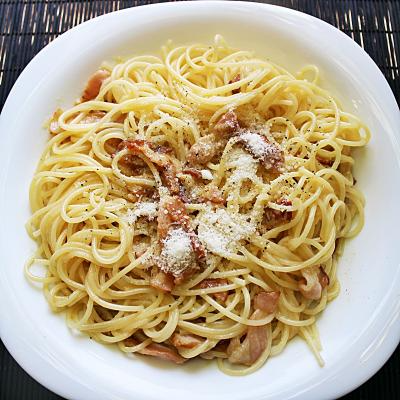

Spaghetti Carbonara

Description
Carbonara is a Roman dish made with eggs, hard cheese, and cured pork.
Its signature rich and silky sauce comes from beaten eggs tossed
with hot pasta.
The trick to making carbonara is making sure the
pasta is hot enough to cook the eggs, but not so hot that they curdle.
Ingredients
- Spaghetti
- Eggs
- Cheese
- Guanciale
- Black pepper
- Salt
Steps
- Cook the pork in olive oil until browned and crispy, then drain on paper towels.
- Boil the spaghetti in salted water. Drain and return to the pot. Let cool.
- Whisk the eggs, 1/2 of the cheese, and some pepper in a bowl until smooth.
- Pour the egg mixture over the pasta, stirring quickly, until creamy.
- Stir in the pork, then top with the remaining cheese and more black pepper.